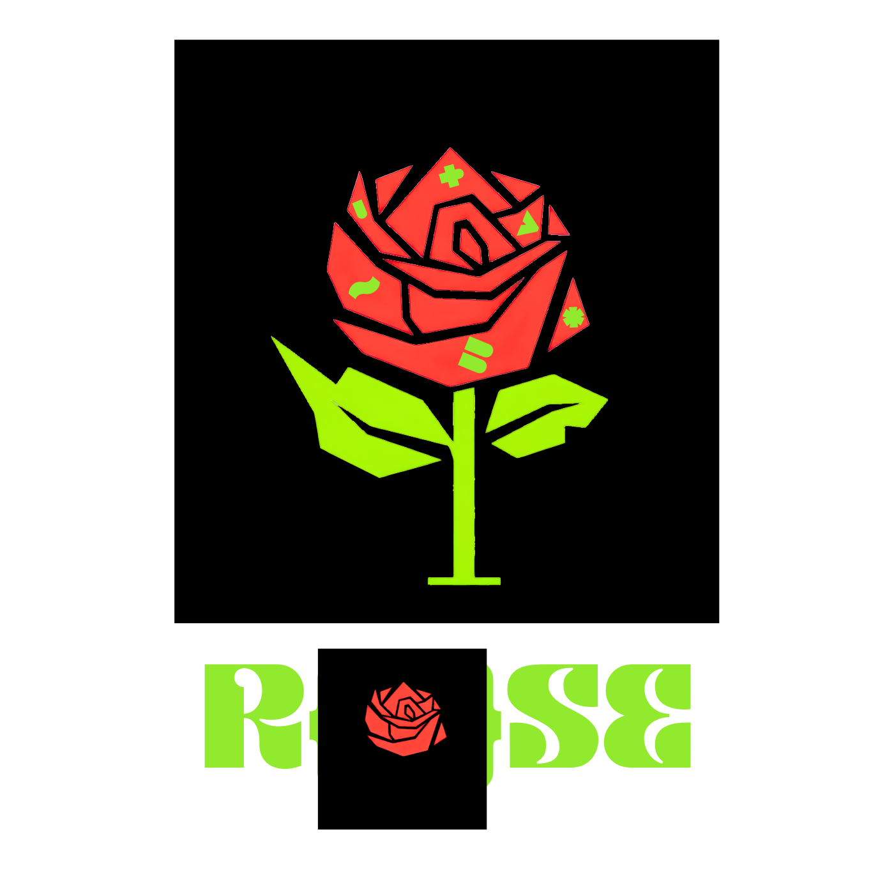

ROSE
Langage de programmation conçu en français : variables avec $, mots-clés si, tant_que, pour…de…vers. L'arithmétique est exacte — entiers arbitraires et rationnels sans arrondi — et les erreurs nomment la variable et la ligne. Surtout : le compilateur est réécrit dans Rose. Son lexer, son analyseur, son vérificateur et son émetteur tournent aujourd'hui dans Rose et rendent, octet par octet, le même résultat que le moteur de référence.
- v3.14.0
- LICENCE MIT
- WINDOWS · LINUX
- INTERPRÈTE · JIT · AOT
- RIR × 3 VOIES

}Écrire du code comme une phrase, calculer comme un mathématicien
Rose donne aux programmes l'allure du français : une affectation $x = 1 / 3
ne produit pas un arrondi mais le rationnel exact, rendu en décimale périodique —
0.[3], la période placée entre crochets.
Les exposants négatifs rendent des fractions exactes, les factorielles sortent avec tous leurs chiffres,
et la comparaison ≈ existe à côté de ==.
Le moteur de référence est un binaire natif, sans runtime à installer : interprète pour écrire, JIT pour accélérer, compilation AOT vers C++ (g++ -O3) pour la vitesse. Les trois voies rendent exactement la même sortie — c'est un test, pas une promesse.
// bonjour.rose fn saluer($nom: chaine) -> chaine { $msg = "Salut, " + $nom + " !" retour $msg } $noms = ["Ada", "Grace", "Alan"] $i = 0 tant_que ($i < longueur($noms)) { >> saluer($noms[$i]) $i = $i + 1 }
> rose bonjour.rose
Salut, Ada !
Salut, Grace !
Salut, Alan !
Ce que Rose tient déjà
Nombres exacts
Entiers de taille arbitraire, rationnels exacts rendus en décimale périodique, flottants IEEE-754. 1/3 + 1/3 + 1/3 rend exactement 1.
Vitesse native
Interprète, JIT x64, et compilation AOT : le programme est transpilé en C++ puis compilé par g++ -O3. Aucun runtime à installer.
Auto-hébergement
Le front-end Rose — lexer, analyseur, vérificateur, émetteur RIR — est écrit en Rose. Il rend la sortie de l'oracle à l'octet près sur 104 fichiers, par l'interprète et par la compilation.
Erreurs qui parlent
Le moteur ne se tait jamais : variable sans valeur, division par zéro, clé absente — chaque échec nomme la variable et l'endroit, en interprété comme en compilé.
Portable
Installeur Windows sans droits administrateur, binaires Linux x64 et arm64, ports croisés par Zig. Le binaire rendu tourne seul.
Libre et vérifié
Moteur C++ sous licence MIT. La suite de conformité (tests dorés, parités, campagnes génératives) est la spécification : tout bug observable est gelé en test.
Installer Rose
L'installeur fonctionne en mode utilisateur — aucun droit administrateur. Il déclare la commande
rose dans le PATH, associe les fichiers .rose à leur
icône (double-clic = exécution), propose « Modifier » avec le bloc-notes, et s'inscrit dans
Applications et fonctionnalités pour une désinstallation propre.
> .\Rose-Setup-3.14.0.exe # puis, dans un nouveau terminal : > rose info > rose bonjour.rose
SHA-256 (setup) : 363792c13a3e6d6a7c48169e21a1e5b19ad10852aefcf6c5f26848d1c571dc8a · SHA-256 (zip) : 6c20bebe18fb4f84650dc26b021c62594700beae49f7404030745614c1f17074 — vérifiables via SHA256SUMS.txt
Linux (x64 / arm64) : compilez moteur/cpp avec make (GMP requis), puis copiez le binaire dans /usr/local/bin. Les sources et l'architecture sont sur GitHub.
Le chantier, sans filtre
✓ Fait
- Le langage et son moteur de référence C++ : interprète, JIT x64, compilation AOT (RIR → C++ → g++).
- Windows x64 validé sur machine réelle ; Linux x64 et arm64 ; ports croisés Zig.
- Arithmétique exacte : entiers arbitraires, rationnels, exposants négatifs, IEEE-754 dominant.
- Conformité : 46 tests dorés, 119 parités, campagnes génératives sans divergence.
- v3.14.1 (en chantier) : lexer, analyseur, vérificateur et émetteur RIR écrits en Rose — 104 fichiers, trois voies (oracle, interprété, compilé) identiques.
… Restant
- La fin du compilateur en Rose : l'émetteur C++ auto-hébergé (jalon M4 suivant).
- Le Jardin : les modules (bibliothèques nommées, imports, versions). Le nom est retenu, le chantier est ouvert.
- Nombres complexes natifs.
- Nouvel opérateur d'affectation, pour lever toute ambiguïté avec l'égalité.
- Préfixe de mesure : afficher le temps d'exécution d'une fonction, d'une affectation, du programme entier.
- Export polyglotte : émettre C++, Rust ou Python depuis le même programme.
- Moteur wasm : faire tourner Rose dans le navigateur, sans serveur.
- Alléger les dépendances : terme de la dette autour de GMP.
Le compilateur qui compile le compilateur
Chaque jalon est scellé par une porte : la sortie de Rose-écrit-en-Rose doit être identique à l'oracle, par l'interprète et par le binaire compilé.
Playground
si /
tant_que / pour, fonctions et récursion,
bibliothèque standard de base. La console rend la sortie telle que l'écrirait le moteur.
Les tables, le hasard, les fichiers et le temps réel demandent le
moteur installé —
le playground le dit au lieu de le simuler.
Besoin de la bibliothèque complète ? La doc recense les fonctions du moteur.
Documentation
Rose en une page
Rose est un langage conçu en français : les mots-clés sont si,
sinon, tant_que, pour,
retour, vrai, faux ;
les variables portent un $. Les noms acceptent les lettres accentuées.
Le moteur de référence (C++, v3.14.0, licence MIT) propose trois modes d'exécution — interprète, JIT, compilation native AOT — qui rendent la même sortie, caractère par caractère ; c'est vérifié par 119 tests de parité et des campagnes génératives.
Deux promesses résument le projet : le calcul est exact (entiers arbitraires, rationnels sans arrondi), et le moteur ne se tait jamais (toute erreur nomme la variable et l'endroit).
Démarrer
Windows
Lance Rose-Setup-3.14.0.exe (page d'accueil). Aucun droit administrateur.
Le dossier bin rejoint ton PATH utilisateur et les fichiers
.rose deviennent double-cliquables.
Linux
Compile moteur/cpp avec make (GMP requis), puis installe le binaire.
Commandes du moteur
| Commande | Effet |
|---|---|
rose prog.rose | Interpréter le programme |
rose comp prog.rose -o prog.bin | Produire un exécutable natif (AOT) |
rose build prog.rose -o prog.bin | Idem — nom modernisé en v3.14 |
rose rir prog.rose | Dumper la représentation intermédiaire (RIR) |
rose tokens / ast / verif prog.rose | Oracle du front-end auto-hébergé (jetons, arbre, vérification) |
rose info | État du moteur et dépendances |
rose version | Numéro de version |
Premier programme
// hello.rose $nom = "monde" >> "Bonjour, " + $nom + " !"
> rose hello.rose
Bonjour, monde !
>> est l'instruction d'affichage.
// commente la fin de ligne.
Variables
Une variable naît de sa première affectation : $total = 0.
Son $ la distingue du reste ; le nom peut être accentué
($saison, $élément).
Lire une variable jamais affectée est une erreur nommée, pas un vide silencieux :
Rose : erreur — variable 'total' utilisée sans valeur
Les fonctions ne voient jamais les variables globales : on passe des paramètres. C'est la règle qui rend les trois modes d'exécution identiques.
Types
| Type | Valeur | Exemple |
|---|---|---|
entier | entier arbitraire, sans débordement | 2 ^ 64 → 18446744073709551616 |
rationnel | fraction exacte (issue de / entre entiers), rendue en décimale périodique | 1 / 3 → 0.[3] |
flottant | IEEE-754 double (littéral avec point — pas d'exposant dans le texte) | 2.5, 0.125 |
booleen | vrai ou faux | $ok = vrai |
chaine | texte UTF-8, indexé depuis 0 en caractères | "Bonjour", $ch[1:3] |
liste<T> | séquence mutable d'un même type | [1, 2, 3], joindre($l, 4) |
table | association clés → valeurs (moteur installé) | table(), inserer($t, "c", 3) |
tampon | zones de lecture/écriture (moteur installé) | tampon(4) |
vide | l'absence de valeur | vide |
Dès qu'un opérande est flottant, l'opération se mène en flottant — c'est testé comme spécification.
Opérateurs
| Opérateur | Rôle | Note |
|---|---|---|
+ - * | arithmétique exacte | mélangeable ; + concatène deux chaînes |
/ | division exacte | 7 / 2 → 3.5 ; 1 / 3 → 0.[3] — jamais d'arrondi |
div · % | quotient · reste florentins | -7 div 2 → -4 ; par zéro : erreur nommée |
^ | exponentiation | exposant négatif permis : 2 ^ -3 → 0.125 |
== != < <= > >= | comparaisons exactes | chaînes comparées par ordre des caractères |
≈ | égalo tolérante (flottants) | comparaison approchée (moteur installé) |
et ou non | logique | pas de court-circuit : les deux côtés sont évalués |
Le playground de ce site applique les mêmes règles (sauf ≈, réservé au moteur installé).
Instructions
| Forme | Effet |
|---|---|
$x = expr | affectation |
>> expr | afficher la valeur (format du moteur : rationnel « p/q », flottant le plus court avec « .0 ») |
// … | commentaire |
fn nom($p: type) -> type { … } | fonction |
@dll("…") @sym("…") fn nom(…) -> type | fonction étrangère (FFI, moteur installé) |
Conditions & boucles
si ($note >= 10) { >> "admis" } sinon si ($note >= 5) { >> "rattrapage" } sinon { >> "recalculé" } tant_que ($i < 10) { $i = $i + 1 } pour k de 0 vers 10 { >> k } // k = 0 … 9 : la borne haute n'est pas atteinte
Formes compactes, équivalentes :
? ($x > 0) [ >> "positif" ] // si compact @ ($i < 3) [ $i = $i + 1 ] // tant que compact
Fonctions
fn aire($cote: entier) -> entier { retour $cote * $cote } fn fib($n: entier) -> entier { si ($n < 2) { retour $n } retour fib($n - 1) + fib($n - 2) } >> aire(7) >> fib(20)
Paramètres typés, retour typé, récursion permise. Une fonction ne voit pas les globales : tout entre par les paramètres.
Bibliothèque standard
Sélection des fonctions du moteur v3.14 — les surlignées demandent le moteur installé.
| Fonction | Rôle |
|---|---|
longueur(x) | taille d'une chaîne, d'une liste, d'une table |
sous_chaine(s, a, b) | extrait [a, b[ — $s[1:3], $s[:2], $s[2:] |
ordre(s) · caractere(n) | caractère ↔ codepoint |
joindre(l, x) · concatener(l) | ajouter un élément · joindre une liste de chaînes |
pgcd(a,b) · ppcm(a,b) | arithmétique entière |
factorielle(n) · fibonacci(n) | exactes, tous les chiffres |
est_premier(n) · compter_premiers(n) · nb_chiffres(n) · nombre_pi(n) | nombres premiers & π (n décimales) |
puissance(a, e) · partie_entiere(x) · fraction(p, q) | exponentiation · plancher · construction de rationnel |
abs(x) · min(a, b) · max(a, b) | mélangent types numériques |
entier(x) · flottant(x) · chaine(x) | conversions — chaine rend le texte de la valeur |
temps() · duree(n) · millisecondes() | chronomètre — depuis v3.13 (moteur installé) |
hasard(n) · graine(n) | aléatoire reproductible (moteur installé) |
table() inserer cle_existe supprimer cles | associations (moteur installé) |
nb_arguments() argument(i) · quitter(n) | ligne de commande · arrêt du programme |
La liste complète vit dans le moteur ; rose rir prog.rose montre
laquelle est appelée à chaque ligne.
Erreurs
Le moteur refuse le silence. Toute erreur est écrite sur la sortie d'erreur, code de sortie 1, et la même en interprété et en compilé — c'est l'objet des 119 parités.
| Situation | Message |
|---|---|
| variable lue sans valeur | variable 'x' utilisée sans valeur |
| division entière par zéro | division par zéro |
| clé absente dans une table | clé absente (nommée) |
| index hors bornes | index hors bornes + position |
| texte → nombre impossible | conversion chaine → entier impossible |
Astuce : le compilateur AOT émet ou rejette poliment. S'il ne peut pas garantir une sortie identique à l'interprète, il nomme la construction refusée plutôt que de compiler un faux ami.
Le compilateur qui compile le compilateur
Le moteur de référence déroule chaque programme en trois étapes : l'analyseur construit l'arbre, la vérification typographie les erreurs, l'émetteur produit la représentation intermédiaire (RIR). Depuis la RIR, trois départs : l'interprète, le JIT x64, ou la transpilation C++ compilée par g++ — les trois doivent rendre la même sortie, caractère par caractère.
L'auto-hébergement consiste à réécrire chaque maillon dans Rose, puis à le sceller par une porte triple : la sortie de la version Rose doit être identique à l'oracle sur tout un corpus — par l'interprète et par le binaire compilé. Un maillon non identique n'est pas publié.
| Maillon | Oracle | Statut |
|---|---|---|
| Lexer | rose tokens | ✓ 54 fichiers |
| Analyseur | rose ast | ✓ 56 fichiers |
| Vérificateur | rose verif | ✓ 103 fichiers |
| Émetteur RIR | rose rir | ✓ 104 fichiers |
| Traducteur RIR → C++ | rose build en Rose | … ouvert |
Le fichier émetteur — 3 000 lignes de Rose — figure dans son propre corpus de 104 fichiers : il s'émet lui-même, par l'interprète et par la compilation.
Le Jardin des modules
Les modules — bibliothèques nommées, imports, versions publiées — arriveront, et ils s'appelleront le Jardin. Rien n'est disponible aujourd'hui : quand le Jardin ouvrira, ce sera annoncé ici, dans la documentation, et nulle part avant.
Moteurs secondaires gelés
Les ports Rust et Zig ont servi à prouver la parité du moteur C++. Ils sont gelés depuis v3.14.1 : la direction n'est plus de réécrire le moteur dans d'autres langages, mais que Rose émette d'autres cibles — C++, Rust, Python — depuis un seul programme.
La suite est la spécification
46 tests dorés, 119 parités, 10 bancs d'empreinte, campagnes génératives : chaque bug observé dans la nature est d'abord gelé en test, puis corrigé. Ce que le moteur fait est écrit ; ce qui est écrit est testé.
Créateurs
Stef302
Rose est conçu et implémenté par une seule personne : la langue, le moteur C++, l'auto-hébergement, la suite de tests et ce site. Les échanges, les rapports de bug et les correctifs se passent sur GitHub — chaque bogue observé devient un test avant d'être corrigé.
Contribuer
Un rapport de bug précis (programme, sortie attendue, sortie rendue) vaut de l'or : il est gelé en test de conformité, puis corrigé. Les demandes de fonctionnalité suivent le chantier public — le plus proche étant la fin du compilateur écrit en Rose.
Licence
Le moteur de référence et ses tests sont publiés sous licence MIT. Les binaires produits par la compilation AOT t'appartiennent. La police d'affichage Kare est une version d'essai sous sa propre licence, jointe dans les fichiers du site.
Changelog
Le front-end écrit en Rose
rose tokens: le lexer écrit en Rose rend les jetons du moteur de référence, octet par octet — y compris ceux de son propre code sourcerose ast: l'analyseur rejoint la porte triple (56 fichiers)rose verifpuisrose rir: vérificateur et émetteur de représentation intermédiaire — 103 puis 104 fichiers identiques par les trois voies (oracle, interprété, compilé)- Le binaire AOT de l'émetteur (3 000 lignes de Rose) fait partie de son propre corpus : il se compile lui-même
- Prochain maillon : le traducteur RIR → C++ en Rose
Le compilé dit la même erreur que l'interprète
- Le compilé ne pré-initialise plus en secret : une variable écrite seulement dans une branche rend, au binaire compilé, l'erreur exacte de l'interprète — « variable 'x' utilisée sans valeur » — au même endroit, avec le même nom
- Le flottant est dominant : comparaisons, ≈ et min/max se calculent en arithmétique flottante dès qu'un opérande est flottant — comme la spécification du cœur. Fin du plantage silencieux sur ±infini et non_nombre (trouvé par la campagne générative)
- Couverture AOT : 49 cas de référence, 28 fidèles, 21 rejets polis, 0 écart connu, 0 silence
- Cinq campagnes génératives (540 programmes) sans une seule divergence
Le testeur génératif tient ses promesses
- 380 programmes aléatoires engendrés, comparés à l'octet près sur trois voies — interprète, JIT, compilé AOT ; chaque bogue trouvé est corrigé, chaque écart est nommé
- Lire une variable jamais affectée n'affiche plus le vide ni ne fait tomber le moteur : toutes les voies rendent la même erreur, avec le nom de la variable
- Le rationnel affronte l'entier en AOT : arithmétique mixte, valeur absolue, min/max, division euclidienne — justes au caractère près dans le binaire compilé
- La division flottante par zéro est refusée en AOT comme à l'interprète — jamais d'infini fantôme
- Couverture AOT : 43 cas de référence, 21 fidèles, 21 rejets polis, 1 écart mesuré, 0 silence
Chronomètre et validation Windows
- Validé sur machine Windows 11 réelle : suite complète verte, zéro divergence — le portage croisé n'est plus une promesse
- Fonctions de temps :
temps(),duree(n) - Parité stricte des moteurs de contrôle — 119 tests de parité, 46 tests dorés
Moteur réel
- Compilation AOT : transpilation en C++, exécutables natifs par g++ -O3, sans runtime à installer
- Portage Windows x64 : moteurs croisés
- Contrôle de types fidèle : chaque rejet est nommé, jamais un silence
Versions plus anciennes : le langage a grandi par pas successifs, sur le même principe — la sortie rend exactement ce qui est écrit.